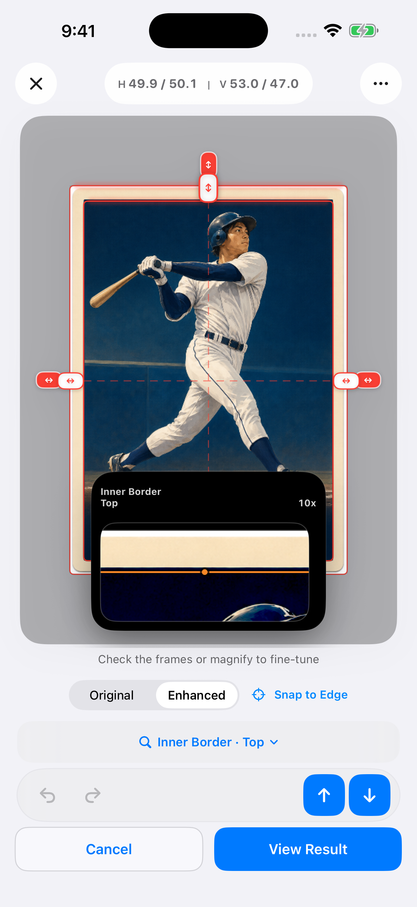

CENTERMINT / TOOLS & GUIDES
How to measure card centering on iPhone
A practical CenterMint workflow: capture a clear photo, check outer and inner borders, fine-tune with the focus loupe, and save your measurements.
1. Start with the photograph
Place one card flat on a contrasting, plain background. Include all four physical corners and use even light. Hold the phone parallel to the card. Import the original image when possible; a screenshot of a gallery can contain black bars, controls and another frame that distract from the card.
A sleeve edge is not the card edge. If glare or a hard holder hides the boundary, improve the photograph before relying on a measurement.
2. Check the outer frame, then the inner reference
Import or photograph the card in CenterMint. The outer frame should follow the physical card, excluding the background and sleeve. Next, inspect the transition between the border and the printed design. Follow the same reference around all four sides, rather than jumping to text boxes or a strong line inside the artwork.
Perspective correction can straighten a tilted view, but it cannot recover a boundary hidden by glare. Card proportions help locate candidates; they do not prove equal borders.
3. Fine-tune with the focus loupe
Select the edge you want to move, then inspect its pixels with the focus loupe. Adjust that edge and check the original image when an enhanced view looks ambiguous. Do not force the ratio to 50/50: real cards can be off-center.

4. Save a result you can compare
Check left/right and top/bottom separately, then save the result. For a front/back comparison, measure each side in its own photograph and keep the pair identifiable in your records. Recheck using the same reference if a later measurement differs.
For example, left 3 mm and right 2 mm give 60/40. A second photo returning 50/50 does not automatically mean the card changed: compare the crop, perspective and selected inner reference.
What this measurement can tell you
Centering is one part of card condition. It does not assess surface damage, corners, authenticity or a complete professional grade. Front and back requirements can differ. Refer to the PSA scale and CGC scale for the applicable category and current criteria.
Recognition runs on your device. If you choose to enable correction sharing, future eligible manually corrected images and frame data upload automatically. Sharing is off by default; see the privacy policy.